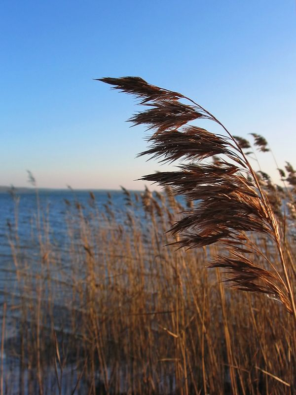

Schilfrohr
Phragmites communis
Diese auf gut schäbisch „Binse“ genannte Süßgrasart ist ein wichtiger Torfproduzent, der zusammen mit Sauergräsern die sogenannte Schilf-Seggentorf-Schichten aufbaut.
Diese auf gut schäbisch „Binse“ genannte Süßgrasart ist ein wichtiger Torfproduzent, der zusammen mit Sauergräsern die sogenannte Schilf-Seggentorf-Schichten aufbaut.